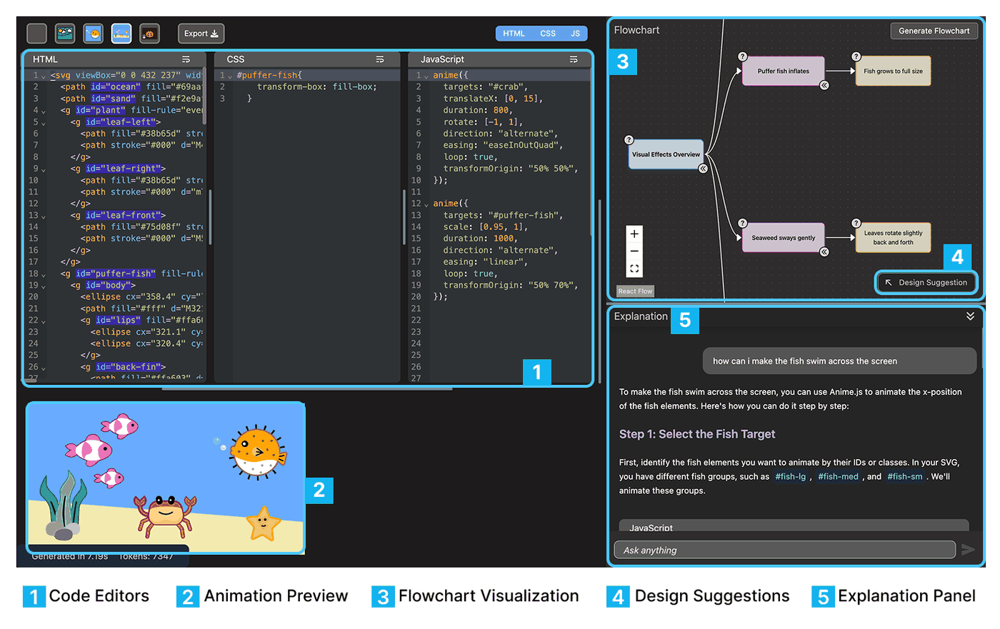
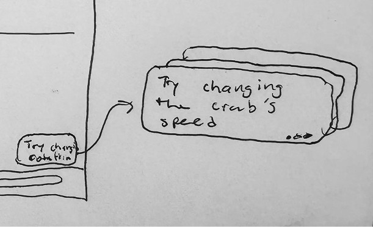
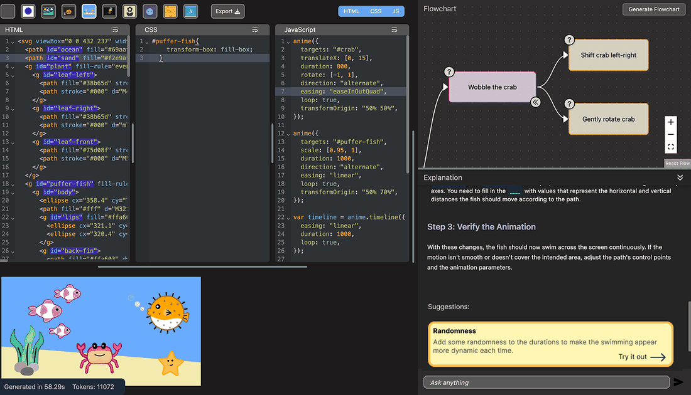
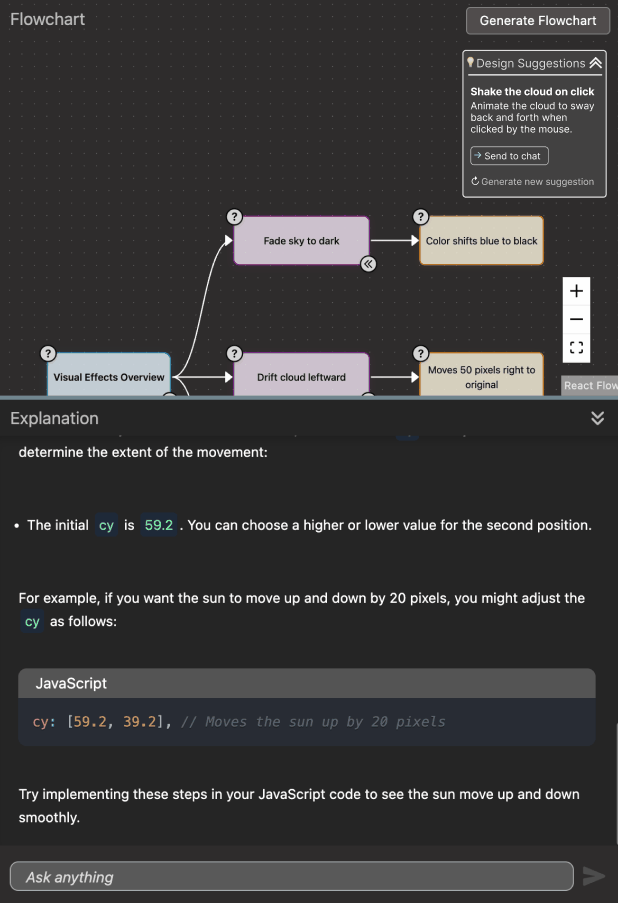
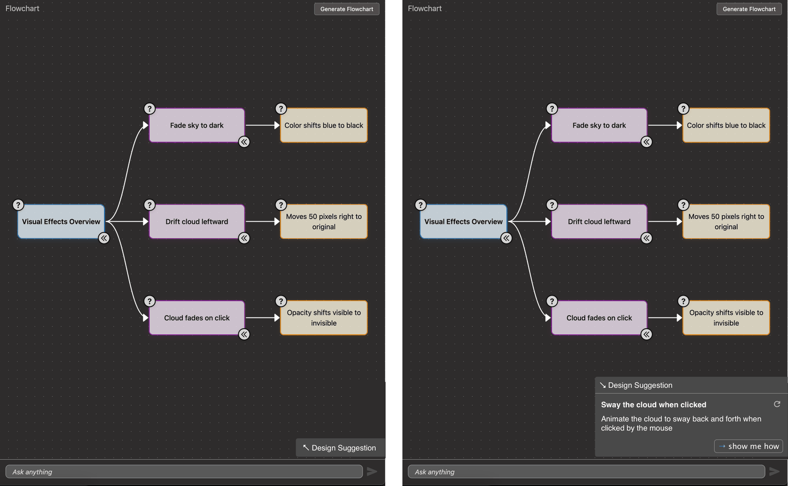
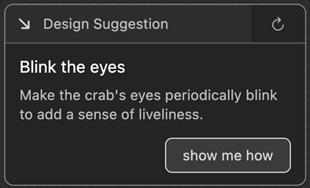
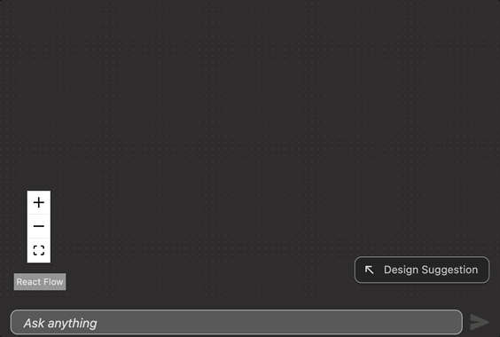

Design Suggestions for Flowcode
An AI feature that helps novice programmers see what they could try next in a creative coding project, while leaving the decision with them. Designed, built, and evaluated at Barnard’s Design Tools Lab.
- Type
- HCI research
Design Tools Lab, Barnard - Role
- Designed and implemented the feature end to end
- Team
- Grace Cai · Tiffany Tseng (advisor)
- Stack
- React · LLM prompt design · Figma
- Evaluation
- 3-hour workshop, K‑8 STEM educators (N = 11)

- Question
- How can a coding environment help novices identify opportunities to iterate, without making the creative decision for them?
- Approach
- Literature review, three interface iterations, a React build with a custom prompt pipeline, then a workshop evaluation.
- Result
- All eleven participants agreed they stayed in control of their creative decisions. About a quarter found the suggestions repetitive.
Context
Flowcode is built for comprehension and authorship, which rules out simply generating the code.
Flowcode is a creative-coding environment from the Design Tools Lab. It pairs HTML, CSS, and JavaScript editors with a live animation preview, a generated flowchart of code structure, and a beginner-oriented explanation chat.
It is positioned deliberately against vibe coding: the goal is for a learner to understand and own what they build. That commitment creates a specific failure mode. A novice finishes a working animation, looks at it, and has no idea what they could plausibly do next.
They can write the code. They cannot picture what to build next. Design Suggestions addresses that gap.
How can we support novice programmers in identifying opportunities to iterate on creative coding projects?
Research questionThe design problem
A suggestion has to be specific enough to act on and easy enough to ignore.
A suggestion feature has an obvious trap at both ends. Too passive and nobody finds it. Too assertive and it quietly becomes the author of the project, with the learner accepting rather than choosing.
The literature frames useful proactive assistance as non-disruptive and context-aware. Both of those turned out to be hard design constraints rather than adjectives, and they drove every decision that followed.
That also changed what counted as success. The measure was never whether users accepted suggestions. It was whether users still felt the decisions were theirs.
- Constraint 01
- Grounded in the learner’s real code, naming elements that actually exist in their project.
- Constraint 02
- Describes a direction. Never hands over a finished implementation.
- Constraint 03
- Costs nothing to dismiss, and stays out of the way when unused.
- Success metric
- Retained creative agency, measured directly in the post-workshop survey.
Process
Four stages from literature review to a feature running in the live environment.

Literature review
Research on novice programming education, proactive AI support, and creative coding, to establish what “helpful” had to mean here.
Design exploration
Low-fidelity sketches testing placements, triggers, and levels of assertiveness for surfacing an idea.
Prototype
Figma mockups and lightweight prototypes narrowing a broad idea space to one interaction model.
Build and evaluate
React implementation with a custom prompt pipeline, tested in a three-hour workshop with K‑8 STEM teachers.
Iteration
Three versions answering one question: where does a suggestion live so that it is available without imposing?
- V1 · Inside the chat
- Suggestions appended to the explanation thread. They competed with long generated explanations and were only visible after scrolling.
- V2 · Pinned panel
- Pulled onto its own surface and impossible to miss, but permanently occupying the canvas and covering the flowchart underneath.
- V3 · Collapsed by default
- A single corner chip at rest, expanded on request. One suggestion at a time, with a regenerate control and a handoff to the explanation chat.



Each revision made the feature quieter at rest and no harder to reach.
Design principleThe feature
One idea at a time, named against the learner’s own code, never auto-applied.
Design Suggestions generates a single, project-specific, achievable idea in
plain language, anchored to elements that exist in the learner’s code
such as #back-fin or #cloud.
Showing one suggestion rather than a list was deliberate. A list invites comparison shopping and shifts the learner into evaluating the AI’s options instead of forming their own intent. If the single suggestion does not appeal, regenerating costs one click.
The show me how action passes the suggestion into the explanation chat rather than writing code. Implementation stays the learner’s job, and the feature only ever supplies direction.


Evaluation
Eleven K‑8 STEM educators, most with little or no coding experience, over a three-hour workshop.
All eleven participants built working animations during the session. The survey then targeted the thing the design was actually optimizing for.
Every respondent agreed or strongly agreed that they remained in control of their own creative decisions, with no neutral responses at all. It is the strongest and least ambiguous result in the study.
Post-workshop survey, N = 11 respondents per item. Percentages rounded.
I remained in control of the creative decisions I made while using the feature.
The suggestions felt relevant to the project and my current code.
The feature helped me think of ideas I would not have come up with on my own.
The suggestions felt repetitive. (reverse-scored)
Bars are coloured by outcome rather than by Likert label, so the reverse-scored item reads in the same direction as the rest.
Relevance and agency both landed. The weaker result is real and worth stating plainly: roughly a quarter of participants found the suggestions repetitive. With one suggestion surfaced at a time and no memory of what had already been shown, the generator could circle the same handful of ideas within a session.
One finding sits outside the feature entirely. Many participants needed help phrasing prompts at all, which suggests LLM prompting has become a curricular topic in its own right rather than a skill that can be assumed of teachers introducing students to AI tools.
Adapt to experience level
Proactive suggestions should scale their specificity to how much the learner already knows.
Track what was shown
Suggestion history addresses the repetition finding directly, and is the clearest next iteration.
Connect the two features
Linking suggestions to code-to-preview highlighting would show learners exactly which element a suggestion refers to.
Outcome
A suggestion feature changes what a learner thinks is possible, so agency was the measure that mattered.
Design Suggestions shipped into Flowcode and held up in testing: relevant, useful, and never at the cost of the learner’s sense of ownership.
A system with excellent suggestions that hollowed out the learner’s sense of authorship would have failed at its actual job. Most of the design work here went into restraint: one idea, off to the side, never applied automatically.
Presented as a summer research poster with Grace Cai, advised by Tiffany Tseng, in the Barnard Department of Computer Science. Design Suggestions is my contribution. The companion Code-to-Preview Highlighting feature was designed and built by Grace Cai.